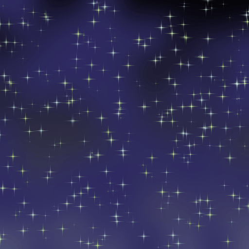
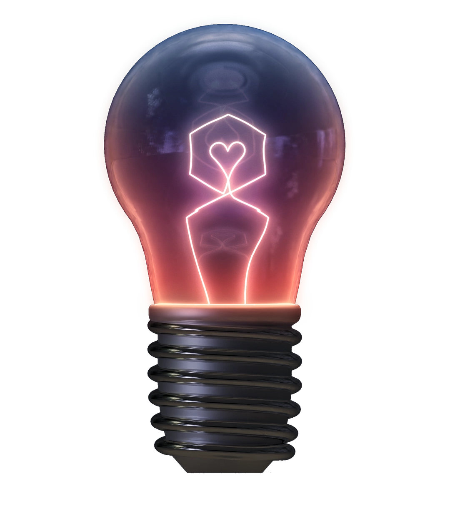

About
Hi, my name is Katrina! I'm a graduate Computer Science student at Rensselaer Polytechnic Institute. I have taken an interest in a number of different areas of Computer Science, including open-source research, robotics education, and procedurally-generated art.
Thank you for taking the time!
Education
Projects
A selection of things I've made recently.
MoveMaster
An open-source reinforcement learning project focused on Jenga, aiming to train an agent capable of making optimal moves. Includes a game-state visualizer for understanding tower configurations, a Python-based game-state generator that simulates valid games through sequences of block transformations, and a Unity simulator that accurately detects game-ending moves.
Visit MoveMaster →Half–Machine
An experimental track that sonifies the Sierpiński triangle, translating its recursive fractal geometry into sound through image-to-audio synthesis. The piece traces a shift from human to machine perspective, and the structure reinforces the idea throughout: a spectrogram of the audio reproduces the triangle itself, and the MIDI sequence and intro/outro were built with palindromic symmetry so the track loops perfectly.
Parametrized Galaxy Generator
A procedural image generator that produces customizable galaxy scenes: stars with variable shape, size, and color; nebulae with adjustable density, size, and color; and solid or gradient backdrops. Built to solve a recurring need for original galaxy textures, used in social content at Funbotics and as game-ready skyboxes for personal projects.
Try the generator →
Funbotics
A robotics curriculum introducing students to the fundamentals of computer science and robotics through assembling and programming their own robots.
View the curriculum →